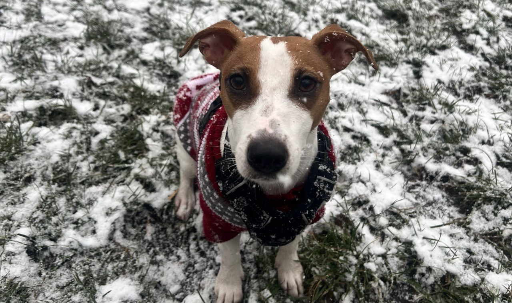

Привіт-привіт! Мене звати Луна, я джек-рассел тер’єр — маленька, але енергійна собачка з великим серцем! Давай я розповім тобі про свою породу
 Стаття у Вікіпедія про мою породуМи — маленькі собаки, але не дозволяй розміру тебе обдурити! У нас повно енергії, сили і характеру. Нас вивели в Англії для полювання на лисиць, тому ми дуже швидкі, кмітливі й хоробрі. Я завжди насторожі — вуха слухають, носик нюхає, лапки вже готові бігти!
Я невеличка — усього 25–30 см у висоту, важу десь 6–8 кг. Шерсть у мене може бути гладенькою, жорсткою або щось між ними. Найчастіше — біла з рудими або чорними плямами. У мене виразні очі, а ще я дуже люблю дивитись на людей з хитрою усмішкою, коли хочу смаколик
Я не можу всидіти на місці! Люблю бігати, стрибати, ганятися за м’ячем або білочками (особливо білочками!). Якщо зі мною не гратись і не вигулювати, я можу трохи бешкетувати — наприклад, зробити з твого капця нову іграшку
Я швидко вчуся, особливо коли є мотивація — наприклад, смачне печиво. Але також я вперта, тому треба бути терплячим. Якщо мене навчити з любов’ю, я можу виконувати команди, трюки і навіть приносити газету
Якщо ти активна людина, любиш прогулянки, пригоди й не проти трохи божевільної любові — ми створені одне для одного! А от якщо шукаєш спокійну собачку, яка тільки спить і сидить на дивані — це не про мене. Мені потрібна увага, гра і дружба!